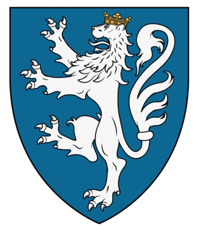

Kung och 1st Lord av Galloway. Blev ca 91 år.
omkring 1070 England. [1]
1161 Holyrood, Irland. [2]
Fergus av Galloway var kung, eller herre, av Galloway från ett okänt datum (troligen på 1110-talet) fram till sin död 1161. Han var grundaren av ett smårike, för att ha etablerat stiftet Whithorn, var beskyddare av nya kloster, såsom Dundrennan Abbey, och flera andra handlingar. Fergus blev en legend efter hans död även om hans verkliga liv är skuggat i mysterium.
Innehåll
1 Ursprung
2 Ursprunget till kungariket Galloway
3 Rikets uppkomst
3.1 Western Galloway och första äktenskapet
3.2 England och andra äktenskap
3.3 Blandgift med Isle of Man
4 Restaureringen av Whithorn
5 Förbindelser med den skotska kungen
5.1 David I av Skottland
5.2 Malcolm IV av Skottland
5.3 Fergus och Meic Fergusa
6 Legenderna om Fergus
6.1 Roman de Fergus
7 Referenser
8 Litteratur
9 Externa länkar
Ursprung
Fergus av Galloway förekommer först i de historiska källorna 1136. Hans ursprung och hans härstamning är dock fortfarande oklara. Under årens lopp har Fergus ursprung varit föremål för stora diskussioner och fantasifulla berättelser av författare med förkärlek för historiska romaner.
En teori är att Fergus var en ättling till en lång stamtavla av Gall-Gaidhel-kungar, som kan ha varit kända som Clann Dubgaill, och påstådd härkomst från en Dubgall. Det som gör denna teori trovärdig är det faktum att huvudgrenen av ättlingarna till den norsk-gaeliska Somerled eller Somairle mac Gillai Brigte tog namnet MacDougall, medan det relaterade namnet MacDouall var populärt i Galloway. Men eftersom Argill-namnet kom i bruk först efter Fergus tid, har denna teori inte mycket värde.
En liknande teori spårar Fergus från en man som heter "Gilli", en Gall-Gaidhel-earl på de västra öarna. Anledningen till denna teori är att Roman de Fergus, en franskspråkig Arthurromans från början av 1200-talet, och romansen ska ha skrivits för att hedra bröllopet för Fergus ättling Alan, Lord of Galloway. Romansen namnger hjältens far som Soumilloit (gaeliska Somairle och fornnordiska Somerlid). Argumentet är att den senare var en avkomma till Earl Gilli och därför att båda Somairles hade Earl Gilli som sin gemensamma förfader.
En tredje teori identifierar Fergus far med den obskyra norrmannen Sumarlidi Hauldr som dödades av en Sweyn (Sven) 1156. Denna Sumarlidi Hauldr nämns i Orkneying-sagan.
Författare i slutet av 1880-talet och början av 1900-talet lutade sig mot teorin att Fergus var en barndomsvän till David I av Skottland vid kung Henry I: s anglo-normandiska hov. Denna teori fick trovärdighet genom sitt äktenskap med dotter till kung Henry I, hans goda relationer med den skotska kungen och hans tålamod mot anglo-normandisk kultur.
I verkligheten är detta släktskap ren fiktion. Det är ganska säkert att Fergus var infödd i Galloway eller öarna bortom. Den franskspråkiga romantiken kan inte heller få allmän trovärdighet i historiska frågor, men namnet Soumilloit är fortfarande förmodligen inte fiktivt och Somairle eller Somerled är ett vanligt Gall-Gaidhel-namn och är vettigt i sammanhanget. I avsaknad av bevis har historiker accepterat att Fergus far bar namnet Somairle. Utöver namnet finns det lite som med säkerhet kan berättas om hans ursprung.
Ursprunget till kungariket Galloway
Trots den gemensamma tron finns det inga bevis för att Galloway någonsin var en del av kungariket Strathclyde. Galloway, åtminstone den väster om floden Nith, låg också på utsidan av det traditionella området som hävdades av kungariket Alba (efter att Strathclyde hade införlivats i Alba). Galloway definierades ofta som något land som låg söder och väster om floden Clyde och väster om floden Annan och låg på utsidan av traditionellt skotskt territorium. Trots att han var en del av norra Storbritannien var Galloway lika mycket en del av Irländska sjön, en del av den gaelisk-nordiska världen av Gall-Gaidhel-kungarna på Isle of Man, eller den gaelisk-nordiska triangeln mellan Irland, Isle of Man och Galloway med lösa förbindelser till de västra öarna som Hebriderna och andra områden där ättlingar till norrmän stod starka.
Till exempel hade den tidigare kungen av Dublin och Isle of Man, Echmarcach mac Ragnaill, titeln Rex Innarenn, det vill säga King of Rhins. Rhen är halvön formad som huvudet på en hammare i Dumfries och Galloway. Den västra delen av Galloway hade blivit permanent ansluten till ön Man och den blandade gaelisk-nordiska bosättningen. Namn med fornnordiska förbindelser spred sig längs hela kusten i sydvästra Skottland och nordvästra England.
I slutet av 1000-talet avsåg den norske kungen Magnus Berrføtt att binda Irländska sjön med den norska tronen. År 1097 skickade han sin undersåte Ingimundr för att ta kontroll över Människoriket och hans ögon, men när detta bara skulle dräpas fick kung Magnus själv gå med i det första av sina två stora fälttåg, det första 1098–1099 och det andra 1102–1103. I det första fälttåget tog han kontroll över Hebriderna och de västra öarna och avsatte kung Lagmann (?) av Isle of Man. Kampanjen tog honom också till Wales där han dödade de normandiska earlerna av Chester och Shrewsbury i ett stort slag. Dessa var vid denna tid i krig med prinsen av Gwynedd. Det är mycket troligt att folket i Galloway accepterade den norska kungens suveränitet. Den skotske kungen, Etgair mac Maíl Coluim av Alba, böjde sig för den norska armén och accepterade norsk överhöghet på öarna.
På sitt andra fälttåg begav sig kung Magnus till Isle of Man och med en enorm flotta anföll han Dublin och försökte få Muircertach mac Toirrdelbach, Ui Briain-kung av Munster att underkasta sig. Fälttåget resulterade i en allians mellan de två kungarna och ett äktenskap mellan kung Magnus son Sigurd och Muircertachs dotter Bláthmin. Alliansen minskade hotet från Domnall mac Lochlainn, kung av Ailech på Irland, och utgjorde grunden för stabilitet för länderna vid Irländska sjön och säkrade kung Magnus nya irländska imperium. Tyvärr gick det mesta fel när kung Magnus på väg tillbaka till Norge landade för en mindre kryssning i Ulster på Irland och dödades mot en överlägsen irländsk armé och det mesta av hans arbete förstördes.
Mot bakgrund av den medeltida Galloways huvudauktoritet tror historikern Richard Oram att ovanstående händelser är nyckeln till att förstå ursprunget till Fergus rike i Galloway. Det var i detta tomrum, i detta maktvakuum som skapade grunden för kungariket Galloway, ett rike som Fergus kom att leda och uppenbarligen skapade. Arthurian -romantiken berättar att Fergus far Somerled var en fattig krigare som hade stor nytta av ett äktenskap med en adelskvinna och från vilken Fergus ärvde makten. Om vi är öppna för några kreativa spekulationer är det troligt att Fergus far var en nordisk krigare som gifte in sig i den nordiska kungafamiljen på Isle of Man, en maktposition som Fergus ärvde och befäste ytterligare och därmed byggde sitt rike på ruinerna som lämnades kvar av kung Magnus Berrføtts död.
Rikets uppkomst
Det är känt att Fergus hade två fruar, även om namnen på båda kvinnorna är okända, men med dessa fruar hade han flera barn och tre av dem är kända:
Gilla Brigte
Uhtred
Affraic
Western Galloway och första
Fergus maktområde verkar ha varit området Galloway mellan floderna Dee och Cree. Det har föreslagits av den skotska historikern Richard Oram att han ökade sin makt i väst genom att gifta sig med en okänd arvinge. Den främsta anledningen till detta är att hans son Gilla Brigte vid Fergus död ärvde den västra delen. Gilla Brigte var den äldste sonen, men eftersom han inte föddes av Fergus fru av kunglig härkomst ansågs han vara underlägsen. Det faktum att han ändå ärvde den västra delen har fått Oram att dra slutsatsen att den västra delen var en del av hans mors arv.
England och andra
Fergus gifte sig bevisligen med den illegitima dottern till kung Henrik I av England. Hennes namn är okänt, men bland de kandidater som historiker har funderat över är Sibylla, änka efter kung Alaxandair mac Maíl Choluim (Alexander I av Skottland), men det finns inte mycket bevis som går i denna riktning. En annan kandidat är Elisabeth, men det namnet saknar också bevis.
Äktenskapet verkar ha varit en del av en engelsk kungs politik för framtiden i de nordvästra utkanterna av hans rike i synnerhet och den irländska zonen i allmänhet. Det var under denna tid som Fergus kallade sig rex Galwitensium – kung av Galloway, men titeln till trots förblev både Fergus som hans granne i norr, kung David I av Skottland, trogna vasaller till den mäktige engelske kungen.
Gift med ön Man
Som en del av Fergus politiska anspråk i Irländska sjön gifte han sig med sin dotter Affraic med kung Olav Gothfrithsson I av Man (1114–1153). Kung Olav var på många sätt underställd både den engelske och den skotske kungen, och inom detta ville Fergus positionera sig, vilket han innehade fram till Olavs död 1153 då han dödades av sina brorsöner. Dessa hade vuxit upp i Dublin och hade väntat på slumpen.
Återställelsen av Whithorn
Klostret Dundrennan, grundat av Fergus.
En liknande positionering var Fergus skapande av biskopsrådet i Whithorn, ett gammalt biskopsråd som först inrättades av människor från Northumbria och under ärkebiskopen av Yorks överhöghet. Det finns livstecken från den siste biskopen av Whithorn, Heathored, år 833, men då finns inga tecken, och det är troligt att stiftet försvann när Northumbrias politiska expansion minskade, en nedgång som skedde i och med den danska plundringen av York 867. Under de följande två och ett halvt århundradena verkar Galloway ha varit under biskopen av Man i väst och med Durham och Glasgow i öster.
I slutet av 1128 beordrade påven Honorius II den framtida biskopen av Whithorn att framträda inför ärkebiskopen av York. Den framtida biskopen var en präst vid namn Gilla Aldan (Gilla Aldain), och ärkebiskopen var Thurstan. York hade utsatts för allt större tryck från ärkebiskopen av Canterburys ambitioner, och York hade bara två stift under sig, Durham och Isle of Man. Thurstan behövde tre för att hålla juridiska ärkebiskopsval. Det är troligt att York och Fergus nådde en överenskommelse. Kung David I av Skottland, å andra sidan, var knappast inblandad eftersom hans politik var negativ till York och till det faktum att han utsåg engelska eller franska präster, och inte gaeliska som med Gilla Aldan. Avtalet med ett separat stift i Galloway säkerställde att Fergus var oberoende av både Isle of Man och Skottland och säkerställde en separat identitet för det nya riket.
En annan punkt som kan noteras är att krigarbiskopen Wimund attackerade en annan biskop, en attack som syftade till att tvinga den andra biskopen under hans kontroll. Historiker som Andrew MacDonald och Richard Oram är överens om att denna biskop faktiskt var Gilla Aldan från Whithorn. Det är troligt att det var restaureringen av Whithorn som utlöste vreden hos biskopen på Isle of Man, vilket gav en indikation på kyrkan i Galloway före Fergus.
Förhållande till den skotske kungen
David I av Skottland
Med kung Henry I av Englands död 1135 blev det svårt för Fergus att behålla sitt förhållande till den engelska tronen. David I av Skottland, härskare över större delen av dagens Skottland och norra England, armbågade sig för en dominerande ställning. Maktbalansen svängde till den skotske kungens fördel. Det var inte längre möjligt för Fergus att balansera sitt oberoende mellan de stora kungadömena i norr och söder. Det är vid denna tidpunkt som Fergus börjar dyka upp i de skriftliga källorna. Sommaren 1136 deltog David I i invigningen av biskop John's Cathedral i Glasgow. I den stora samlingen av skotska och normandiska adelsmän fanns också Fergus med sin son Uchtred och nämns högst upp på en lista över sydvästra gaeliska adelsmän.
Samlingen ga også støtte til David Is ambisjoner rettet seg mot den nye og svake engelske kongen Stefan av England. De adelige fra Galloway er opptegnet i flere kilder for å ha deltatt i den påfølgende militærkampanjen og i Fanenes slag i Yorkshire i 1138. Det er uklart om Fergus og hans menn deltok i dette slaget som de engelske styrkene vant knusende, men i den påfølgende fredsavtalen som ble inngått mellom David I og Stefan i 1139 inngikk at den ene av Fergus’ sønner, høyst sannsynlig Uchtred, ble gitt som gissel til England.
Malcolm IV av Skottland
I 1153 døde kong David I av Skottland og det personlige forholdet basert på overhøyhet som David hadde hatt over Fergus var ikke ment å bli overført til hans etterfølger. David ble etterfulgt av en guttekonge, Máel Coluim eller anglifisert som Malcolm. I begynnelsen synes det som Fergus likevel hadde et relativt godt forhold til den nye kongen, men etter hvert var det øyensynlig ikke i kongens interesse å la den relativt uavhengige vasallen i sør ha for løse tøyler. I 1156 ble Fergus tatt til fange og overlatt kong Máel Coluims rival, Domnall mac Maíl Choluim av MacHeth-klanen, en klan som var fiender av den skotske tronen. På slutten av tiåret var det klart at Fergus og skottekongen ikke lenger var venner.
I 1157 var guttekongens posisjon i sydlige Skottland svekket da han ble tvunget til la kong Henrik II av England overta områdene Cumbria og Northumbria. Det var sannsynligvis dette nederlagt som fikk Fergus til igjen å markere sin uavhengighet. Holyrood-krøniken rapporterte at Máel Coluim av Skottland ledet tre militærkampanjer mot Galloway i 1160. Sammenhengen var at skottekongen hadde vært i Frankrike med sin overkonge Henrik II og hadde akkurat kommet tilbake til Skottland. Mange av de innfødte stormennene beleiret Máel Coluim i Perth da han kom tilbake, men Fergus var tilsynelatende ikke en av disse. Selv om det ikke finnes noe bevis for at Fergus ikke var forbundet med det såkalte Jarlenes opprør er det megetsigende at Galloway ble invadert av skottekongens hær det samme året.
Fergus og Meic Fergusa
Fergus’ siste år ble problematiske med kranglinger med sine to sønner. Kanskje Fergus’ høye alder ble en prøvelse for sønnenes tålmodighet. Forfatteren Walter Daniel beskrev i boken Life of Ailred of Rievaulx at «...holdning mot hans sønner, og sønnenes raseri mot faren og mot hverandre... Kongen av Skottland kunne ikke dempe, heller ikke biskopen kunne berolige deres felles hat, bitterhet og tyranni. Sønner gikk mot fedrene, far mot sønner, bror mot bror, daglig ble det ulykkelige land forurenset med blodsutgytelser...»
Om det var på grund av Gilla Brigtes och Uchtreds fälttåg, eller på grund av skottarnas kung, är oklart, men Fergus tvingades gå i pension och blev munk i Holyrood Abbey 1160. Han dog året därpå.
Legenderna om Fergus
Fergus ättlingar räknade sin släktforskning för att alltid datera sin linje tillbaka till honom. Fergus var en av de få gäliska personligheterna i inlandet under högmedeltiden som uppnådde en legendarisk status i kristendomens bredare värld.
Roman de Fergus
I början av 1200-talet skrev en författare en arthuriansk romans på franska tillägnad den gamle kungen av Galloway. Det är den så kallade Roman de Fergus som är det tidigaste exemplet på icke-gaelisk litteratur skriven på dialekt som kom från Skottland. Enligt traditionen var författaren en man som heter Guillaume le Clerc. Vissa historiker har föreslagit att det skrevs för att hedra invigningen av en ättling till Fergus, Alan mac Lochlainn (eller i detta sammanhang, Alan fils de Roland). Det har också föreslagits att författaren var William Malveisin, en kunglig skrivare för kung William I av Skottland innan han senare utsågs till biskop av Glasgow och St Andrews. Romantiken smickrar Fergus ättlingar genom att göra honom till en Perceval-liknande riddare till kung Arthur.
Romansen cirkulerade i hela den franskläsande världen i nordvästra Europa under de närmaste århundradena. Det hyllar Fergus legendariska status som monark och grundare av Galloway.